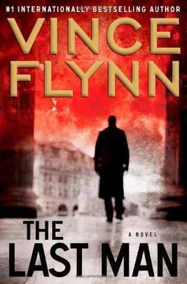

"The Last Man"
- Read on 2013-07-25
- Rating: ️️️️️
- Format: 🎧 (11 hours 53 minutes)
Compared to the rest of the books in the series, I feel like this book has more intrigue than the usual. Just like the other books in this series, this was a quick, easy read, and enjoyable if you're into the spy/espionage type of book. It's bittersweet to read the book, knowing this is the last novel Vince Flynn finished before he lost his fight with cancer. At least Flynn didn't get kneecapped first like so many of Rapp's victims.
On a spoiler-free side note, I have to say that one of my favorite lines comes in this book. Mitch Rapp raises his hand to answer a question in a way that fits his personality so well. "I have an answer to your question..."
- Prior: The Rithmatist
- Next: Threat Vector